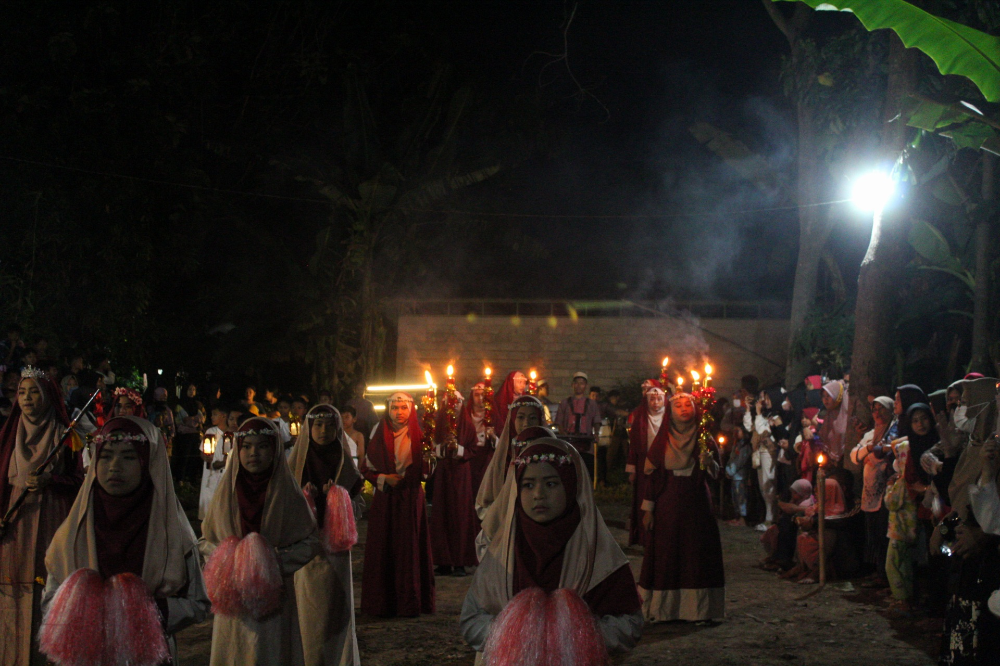
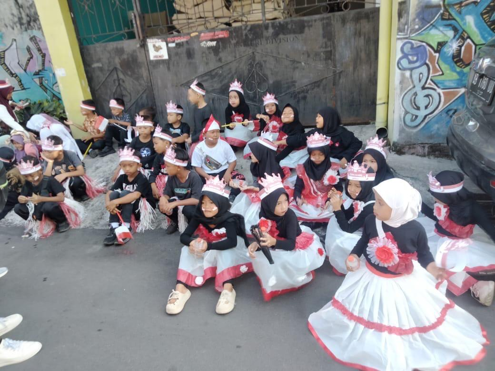
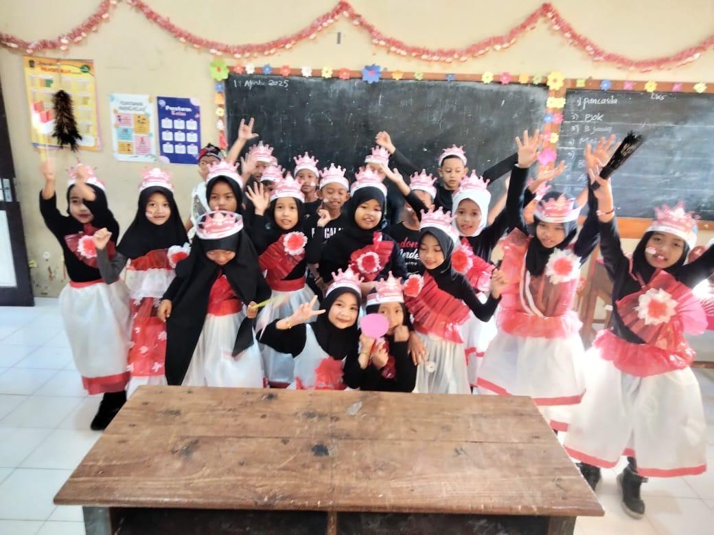
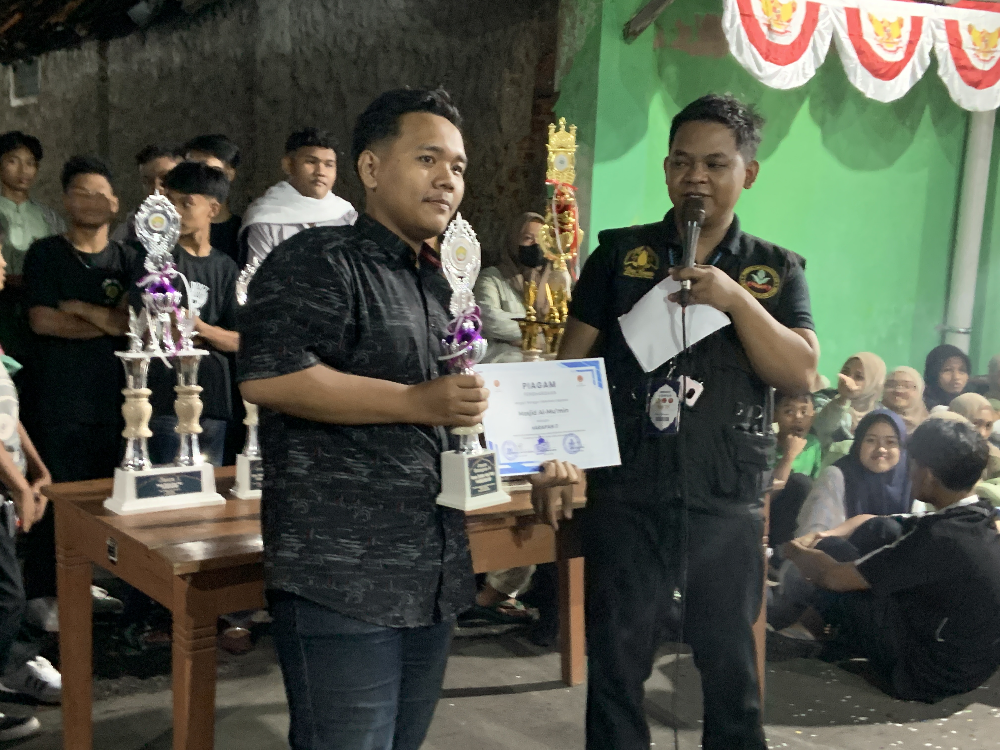
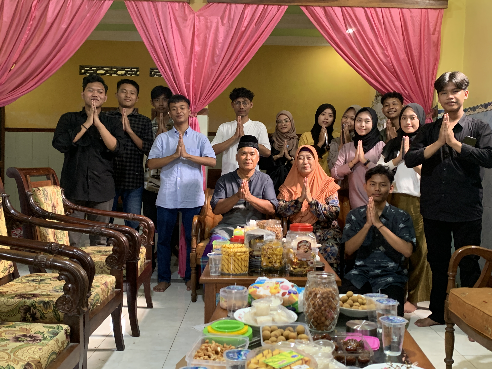

Gema Takbir Idul Fitri
Event tahunan masyarakat desa dalam menyambut hari raya Idul Fitri.

Kreativitas pada festival
Anak anak dari SD N 1 Karanganom mengembangkan kreativitas mereka lalu dipamerkan melalui karnaval

Karnaval
Kegiatan karnaval yang diadakan ketika ada event tertentu dengan melibatkan kreativitas dan kebersamaan masyrakat.

Takbir Keliling
Malam penuh kemenangan dengan semangat gotong royong.

Kegiatan PKK
Kegiatan yang biasa dilakukan untuk perkumpulan ibuk ibuk di Desa

Silaturahmi Takmir
Kegiatan yang dilaksanakan untuk menjalin silaturahmi kepada takmir masjid